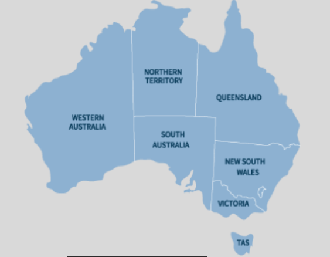

Francesa en la bahía de Abu Qir, en la costa mediterránea de Egipto, del 1 al 3 de agosto de 1798. La batalla fue el punto culminante de la campaña naval que se había extendido a lo largo de todo el mar Mediterráneo durante los tres meses anteriores, cuando un convoy francés partió desde TolónTolón hacia Alejandría, a bordo del cual iba una fuerza expedicionaria bajo el mando del entonces general Napoleón Bonaparte. batalla, las fuerzas inglesas, dirigidas por el contraalmirante sir Horatio Nelson —más tarde conocido como lord Nelson—, derrotaron a las francesashacia Alejandría, a bordo del cual iba una fuerza expedicionaria bajo el mando del entonces general Napoleón Bonaparte. En la batalla, las fuerzas inglesas, dirigidas por el contraalmirante sir Horatio Nelson —más tarde conocido como lord Nelson—, derrotaron a las
